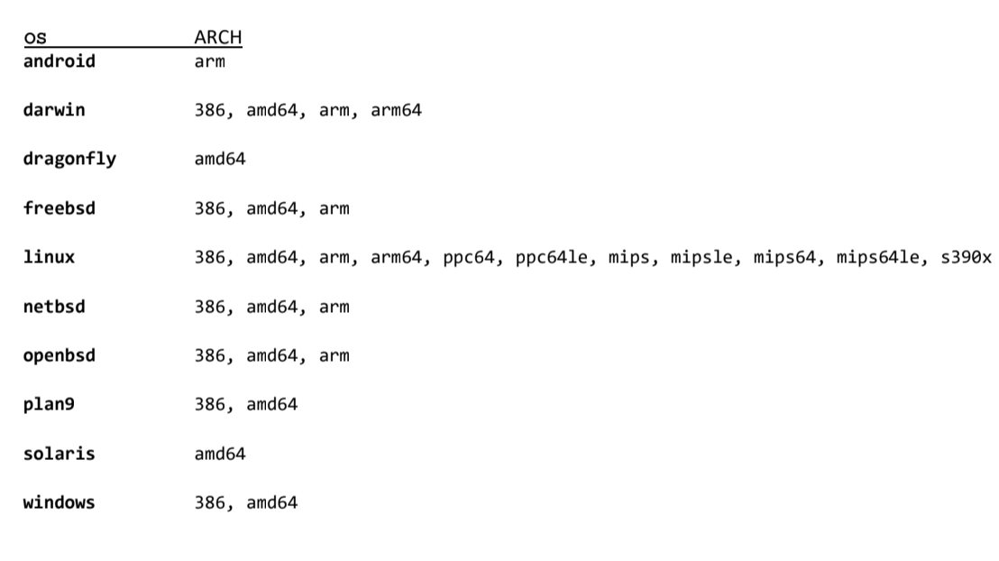
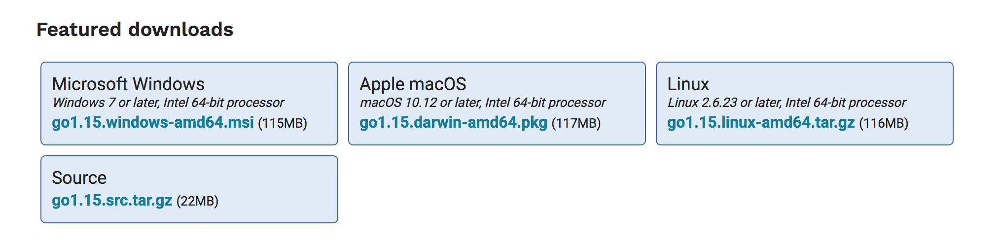
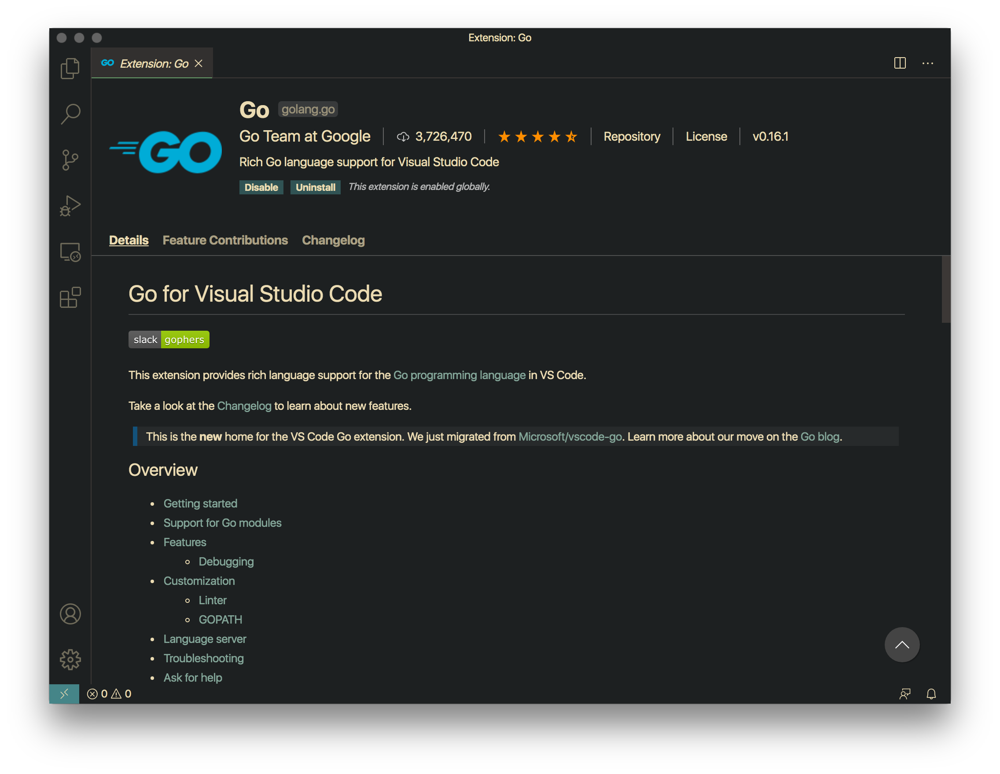

Go 支持的操作系统与处理机架构
Go 被设计为一门支持多平台多处理机架构的程序设计语言，开发团队与开源社区维护着多个平台不同架构的 Go 编译工具链，使用 Go 编写的应用程序可以无缝或以极小的成本在不同平台不同架构之间进行迁移。
下图展示了目前 Go 支持的操作系统与处理机架构，使用go tool dist list可以输出当前安装 Go 版本所支持的操作系统与架构。

图：Go 支持的操作系统与处理机架构
aix/ppc64
android/386
android/amd64
android/arm
android/arm64
darwin/386
darwin/amd64
darwin/arm
darwin/arm64
dragonfly/amd64
freebsd/386
freebsd/amd64
freebsd/arm
freebsd/arm64
illumos/amd64
js/wasm
linux/386
linux/amd64
linux/arm
linux/arm64
linux/mips
linux/mips64
linux/mips64le
linux/mipsle
linux/ppc64
linux/ppc64le
linux/riscv64
linux/s390x
netbsd/386
netbsd/amd64
netbsd/arm
netbsd/arm64
openbsd/386
openbsd/amd64
openbsd/arm
openbsd/arm64
plan9/386
plan9/amd64
plan9/arm
solaris/amd64
windows/386
windows/amd64
windows/arm
注：
go tool dist list输出
Go 安装预编译二进制包
安装 Go 预编译二进制包是搭建 Go 开发环境最简便的方式，Go 开发团队提供了主流 Windows / macOS / Linux 操作系统的预编译二进制包，前往 Golang Downloads 页面，选择对应的安装包下载安装即可。
Golang Downloads 地址：https://golang.org/dl/

图：Go 预编译二进制包
Go 源代码编译安装
从源代码编译安装 Go 是搭建 Go 开发环境最佳方式。Go 作为一门标准的编译型图灵完备程序设计语言，开发团队在工程技术层面实现了语言自举（Bootstrapping），即：使用 Go 编写的工具链编译 Go 。
当然，新语言诞生之初，第一版编译器总是会选用低阶语言（如：C、汇编）实现，Go 也不例外。早期版本的 Go 编译器使用 C 编写，因此，从源代码编译安装 Go 时，我们需要使用最后一个 C 语言实现的 Go 发行版：go1.4-bootstrap，先使用 C 编译器编译出 Go 1.4 版，再使用 Go 1.4 编译出 Go 最新版，链路如下：C -> Go 1.4 Bootstrap -> Go Latest。
编译 Go 1.4（Bootstrap）
本机安装 C 编译工具链（如：GCC、LLVM），使用git工具拉取 Go 源码库，切换至release-branch.go1.4分支，也可以直接下载解压缩go1.4-bootstrap-20171003.tar.gz源代码包，进入src源码目录，运行all.bash脚本启动编译。
Go 1.4 Bootstrap 下载地址：https://dl.google.com/go/go1.4-bootstrap-20171003.tar.gz
# 取得 Go 1.4 Bootstrap 源码包
$ curl -O 'https://dl.google.com/go/go1.4-bootstrap-20171003.tar.gz'
# 解压缩解包
$ tar -xvz -f 'go1.4-bootstrap-20171003.tar.gz'
# 目录重命名（方便区分）
$ mv 'go' 'go_1.4_bootstrap'
# 进入`src`目录
$ cd 'go_1.4_bootstrap/src'
# 禁用 CGO
$ export CGO_ENABLED=0
# 执行编译脚本
$ bash 'all.bash'
...
代码清单：编译 Go 1.4（Bootstrap）流程
编译脚本会自动侦测出当前主机的操作系统与处理机架构（如：linux/amd64）并执行编译，编译完成后 Go 还会执行一系列测试流程进行检验，如果一切正常，编译、测试都没有出错，则会给出如下提示信息。
ALL TESTS PASSED
---
Installed Go for linux/amd64 in /home/ziheng/go_temp/go_1.4_bootstrap
Installed commands in /home/ziheng/go_temp/go_1.4_bootstrap/bin
*** You need to add /home/ziheng/go_temp/go_1.4_bootstrap/bin to your PATH.
代码清单：Go 1.4（Bootstrap）编译提示信息
执行bin/go命令查看当前编译完成的 Go 版本，验证一下。
# 回退上级目录
$ cd ..
# 显示当前 Go 版本
$ bin/go version
go version go1.4-bootstrap-20170531 linux/amd64
代码清单：Go 1.4（Bootstrap）编译验证
编译 Go 1.15（Latest）
有了 Go 1.4 Bootstrap，我们就可以用来编译 Go 最新版本了，当前 Go 最新版为 1.15。我们需要指定GOROOT_BOOTSTRAP环境变量为上一步编译完成的 Go 1.4 Bootstrap 目录，运行all.bash脚本执行编译，编译、测试流程走完后，我们就得到了编译好的 Go 最新版二进制包。
# git 拉取 Go 源码库
$ git clone 'https://github.com/golang/go.git'
$ cd go
# 切换至最新分支
$ git checkout 'release-branch.go1.15'
# 指定 Go 1.4 Bootstrap 路径
$ export GOROOT_BOOTSTRAP='/home/ziheng/go_temp/go_1.4_bootstrap'
# 进入`src`目录
$ cd src
# 执行编译脚本
$ bash 'all.bash'
...
代码清单：编译 Go 1.15（Latest）流程
执行bin/go命令查看当前编译完成的 Go 版本，确认为最新版本。
# 回退上级目录
$ cd ..
# 显示当前 Go 版本
$ bin/go version
go version go1.15 linux/amd64
代码清单：Go 1.5（Latest）编译验证
最后，不要忘记添加 Go 安装路径到全局环境变量$PATH之中，使得 Go 命令全局可调用。
# 添加 Go 安装路径至 PATH 环境变量
$ cat >> ~/.bashrc << 'EOF'
export GOROOT='/path/to/your/go/install'
PATH="${PATH}:${GOROOT}/bin"
EOF
代码清单：添加 Go 安装路径至
$PATH环境变量
裁减 Go 编译中间文件
我们通过源代码编译得到的 Go 二进制包相比于官方的 Go 预编译二进制包，文件体积大了许多。这是因为在编译过程中生成了体积巨大的obj编译中间文件，裁减掉这部分编译中间文件，可以有效地缩小 Go 二进制包的体积。Go 编译中间文件位置：${GOROOT}/pkg/obj。
# 源代码目录下
$ rm -rf pkg/obj
代码清单：裁减 Go 编译中间文件
Hello, world!
编写Hello, world!程序是程序员接触一门新语言时的传统，上手编写 Go 版本的Hello, world!程序吧。
package main
import "fmt"
func main() {
fmt.Println("Hello, world!")
fmt.Println("你好，世界！")
}
// EOF
代码清单：
Hello, worldin Go
编译，运行 Go Hello, world!程序。
$ go build main.go
$ ./main
Hello, world!
你好，世界！
代码清单：编译运行 Go
Hello, world程序
代码编辑器与集成开发环境
俗话说得好，工欲善其事，必先利其器。随着 Go 的流行，诸多厂商、开发者开发了支持 Go 的集成开发环境（IDE）与编辑器插件，优秀的开发工具帮助我们更具效率地开发 Go 。
| 名称 | 简介 | 链接 |
|---|---|---|
| GoLand | JetBrains 开发的 Go IDE。 | https://www.jetbrains.com/go |
| LiteIDE | 一款简洁、开源、跨平台的 Go IDE。 | https://github.com/visualfc/liteide |
| GoClipse | 为 Go 开发定制化的 Eclipse IDE。 | https://goclipse.github.io |
| GoWorks | 一款基于 Netbeans 的开源 Go IDE。 | http://tunnelvisionlabs.com/products/demo/goworks |
表：支持 Go 的集成开发环境（IDEs）
对于嫌弃 IDE 太过笨重不够轻量的开发者而言，使用 Visual Studio Code 搭配vscode-go插件包是一个绝佳的选择。vscode-go插件包由 Go 开发团队维护，提供多种便捷 Go 开发辅助功能。
- 自动代码补全
- 代码跳转
- 代码格式化
- 代码风格检查
- 集成测试
- 代码调试
- …

图：Visual Studio Code 搭配
vscode-go插件包
参考资料
- Go Minimum Requirements: https://github.com/golang/go/wiki/MinimumRequirements
- GoDoc - Installing Go: https://golang.org/doc/install
- GoDoc - Installing Go from source: https://golang.org/doc/install/source
- Book:《The Way to Go》